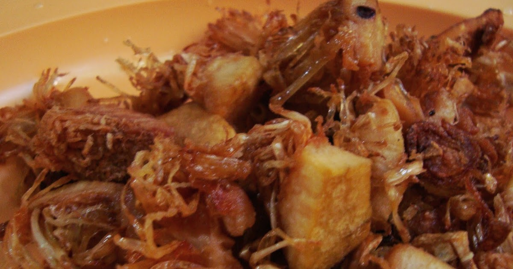
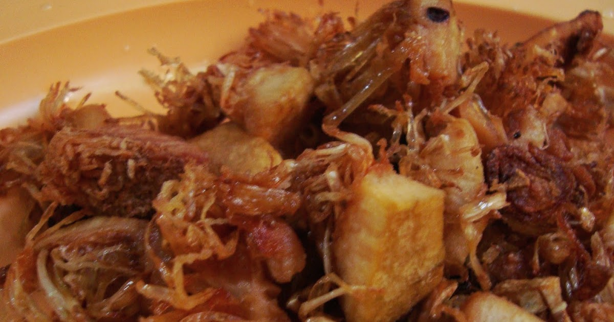

|
MANDAI BANJAR adalah produk dari CV. Urang Banjar, yaitu usaha kreatif makro yang bergerak dibidang pembuatan olahan buah-buahan lokal . Kami memiliki keahlian terbaik untuk mengolah dan memproses makanan dengan handmade dan higienis.
Dengan pengalaman dan kreatifitas yang dimiliki, kami menciptakan produk-produk unik untuk mendorong konsumsi buah-buahan lokal.
Dengan adanya MANDAI BANJAR diharapkan dapat membantu anda dalam menyediakan makanan yang murah, lezat, dan higienis.
Dengan pengalaman dan kreatifitas yang dimiliki, kami menciptakan produk-produk unik untuk mendorong konsumsi buah-buahan lokal.
>Dengan adanya MANDAI BANJAR diharapkan dapat membantu anda dalam menyediakan makanan yang murah, lezat, dan higienis.